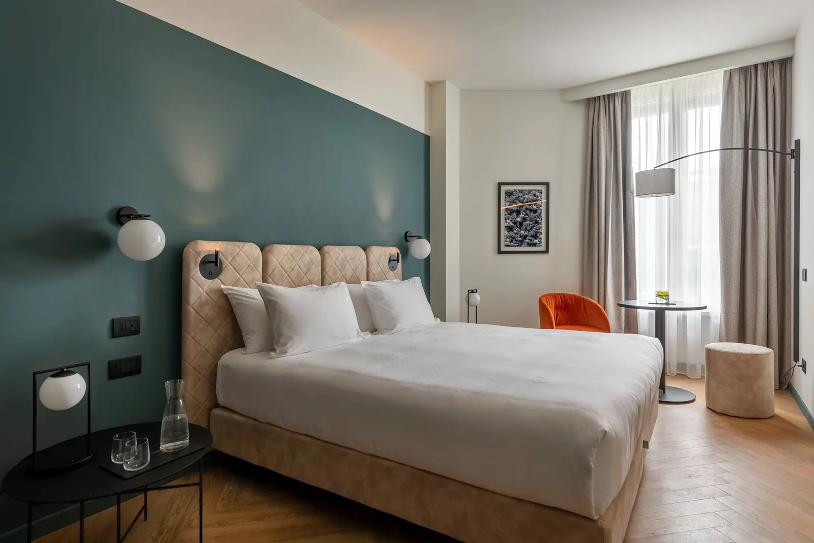

Comfort
14 camere · m²
Per una o due notti di lavoro.
Stanotte dormi. Domani lavori.
133 camere silenziose, rifatte nel 2021. Il cuscino lo scegli tu.

Colazione inclusa · cancellazione gratuita fino a 24 ore prima · il cuscino scelto, già sul letto.
Le camere
In ogni camera: wifi veloce, smart TV 55", minibar, cassaforte, caffè e tè.
14 camere · m²
Per una o due notti di lavoro.

63 camere · m²
La più prenotata da chi resta da lunedì a giovedì.

35 camere · m²
Più spazio per lavorare in camera.

21 suite · m²
Per ricevere qualcuno senza scendere in hall.
Da confermareMetrature, letti e prezzo "da" per tipologia; l'abbinamento delle foto alle tipologie (PROGETTO.md §13, punto 4).
Solo prenotando su tocq.it
Tre scelte, dieci secondi. Lo trovi pronto quando arrivi.
Per lo sviluppoLe scelte passano al booking engine come servizi selezionabili (meglio) o richieste speciali, e arrivano alla governante nel report degli arrivi. Da verificare con il fornitore del motore.
Domande frequenti
La reception risponde 24 ore su 24: +39 02 62071. La colazione e il ristorante sono nella pagina Cucina tutto il giorno.